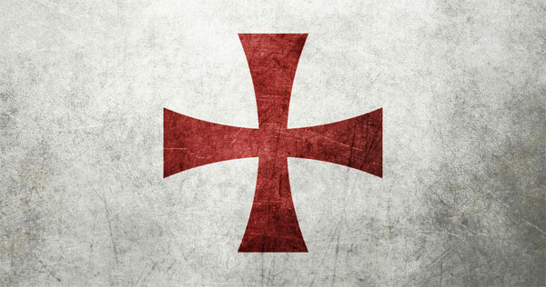

Sărmanii soldați ai lui Hristos și ai Templului lui Solomon,

cunoscuți mai ales sub numele de templieri sau Ordinul Templului, a fost unul dintre
cele mai cunoscute ordine călugărești militare catolice creștine. A luat naștere la inițiativa francezului Hugo de Payens
în anul 1119 în Ierusalim, ca o organizație militar-călugărească, cu scopul declarat de a apăra pe peregrinii (călători) creștini în Țara Sfântă.
Recunoscut oficial de Biserica catolică, prin acceptarea de către papa Inocențiu al II-lea în 1139.
Ordinul a crescut repede ca număr de membri și putere. Ordinul cuprindea călugări militari războinici, călugări
capelani și călugări de serviciu (slujitori). Cavalerii templieri puteau fi recunoscuți la îmbrăcăminte, după o mantie albă cu
o cruce roșie, distinctivă, și erau printre cei mai bine echipați, antrenați și disciplinați războinici din perioada cruciadelor.
 Membrii Ordinului care nu erau războinici au creat o puternică infrastructură economică în întreaga creștinătate, introducând
pentru prima oară proceduri financiare care au reprezentat începutul sistemului bancar și au construit numeroase fortificații în Europa și Țara Sfântă.
Succesul templierilor era strâns legat de succesul cruciadelor, ei fiind sprijiniți de biserica catolică.
Membrii Ordinului care nu erau războinici au creat o puternică infrastructură economică în întreaga creștinătate, introducând
pentru prima oară proceduri financiare care au reprezentat începutul sistemului bancar și au construit numeroase fortificații în Europa și Țara Sfântă.
Succesul templierilor era strâns legat de succesul cruciadelor, ei fiind sprijiniți de biserica catolică.
Când Țara Sfântă a fost
pierdută, iar călugării militari templieri au suferit înfrângeri zdrobitoare, sprijinul pentru existența ordinului s-a stins.
Zvonurile despre ceremoniile inițiatice secrete ale lor au creat neîncredere, iar regele Filip al IV-lea al Franței, puternic
îndatorat ordinului, a început să facă presiuni asupra papei Clement al V-lea. Vineri, 13 octombrie 1307, regele Filip a arestat
majoritatea membrilor Ordinului, inclusiv pe Marele Maestru Jacques de Molay, și, după ce le-a obținut mărturisirile prin tortură, i-a ars pe rug.
În 1312, papa Clement, sub presiune din partea regelui Filip, a dizolvat cu forța întregul ordin. Dispariția bruscă a unei
componente importante din societatea europeană a acelor timpuri a dat naștere la speculații și legende, care trezesc și astăzi interes.